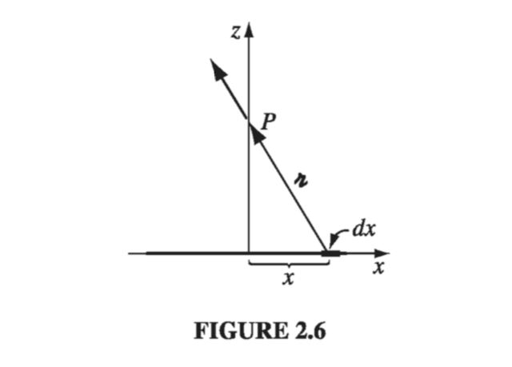

2.1: The Electric Field#
2.1.1: Introduction#
The fundamental problem electrodynamics hopes to solve is this (Fig 2.1): We have some electric charges \( q_1, q_2, q_3, \ldots \) (call them source charges); what force do they exert on another charge, \( Q \) (call it the test charge)? The positions of the source charges are given (as functions of time); the trajectory of the test particle is to be calculated. In general, both the source charges and the test charge are in motion.

The solution to this problem is facilitated by the principle of superposition, which states that the interaction between any two charges is completely unaffected by the presence of others. This means that to determine the force on Q, we can first compute the force \( \vec{F_1} \), due to \( q_1 \) alone (ignoring all the others); then we compute the force \( \vec{F_2} \), due to \( q_2 \) alone, and so in. Finally, we take the vector sum of all these individual forces: \( \vec{F} = \vec{F_1} + \vec{F_2} + \vec{F_3} + \ldots \) Thus, if we can find the force on Q due to a single source charge \( q \), we are, in principle, done (the rest is just a question of repeating the same operation over and over, and adding it all up)
The principle of superposition may seem “obvious” to you, but it did not have to be so simple: if the electromagnetic force were proportional to the square of the total source charge, for instance, the principle of superposition would not hold, since \( (q_1 + q_2)^2 \neq q_1 ^2 + q_2 ^2 \) (there would be “cross terms” to consider). Superposition is not a logical necessity, but an experimental fact.
Well, at first sight this looks very easy: Why don’t I just write down the formula for the force on Q due to q, and be done with it? I could, and in Chapter 10 I shall, but you would be shocked to see it at this stage, for not only does the force on Q depend on the separation distance \( \Delta r \) between the charges (Fig 2.2), it also depends on both their velocities and on the acceleration of \( q \). Moreover, it is not the position, velocity, and acceleration of \( q \) right now that matter: electromagnetic “news” travels at the speed of light, so what concerns Q is the position, velocity, and acceleration q had at some earlier time, when the message left.
Therefore, in spite of the fact that the basic question (“What is the force on Q due to q?”) is easy to state, it does not pay to confront it head on; rather, we shall go at it by stages. In the meantime, the theory we develop will allow for the solution of more subtle electromagnetic problems that do not present themselves in quite this simple format. To begin with, we shall consider the special case of electrostatics in which all the source charges are stationary (though the test charge may be moving).
2.1.2: Coulomb’s Law#
What is the force on a test charge Q due to a single point charge q, that is at rest a distance \( \Delta r \) away? The answer (based on experiments) is given by Coulomb’s Law:
The constant \( \epsilon_0 \) is called (ludicrously) the permittivity of free space. In SI units, where force is in newtons (N), distance in meters (m), and charge in coulombs (C),
In words, the force is proportional to the product of the charges and inversely proportional to the square of the separation distance. As always (Sect 1.1.4), \( \vec{\Delta r } \) is the separation vector from \( \vec{r'} \) (the location of q) to \( \vec{r} \) (the location of Q):
\( \Delta r \) is its magnitude, and \( \hat{\Delta r } \) is its direction. The force points along the line from q to Q; it is repulsive if q and Q have the same sign, and attractive if their signs are opposite.
Coulomb’s law and the principle of superposition constitute the physical input for electrostatics - the rest, except for some special properties of matter, is mathematical elaboration of these fundamental rules.
2.1.3: The Electric Field#
If we have several point charges \( q_1, q_2, \ldots , q_n \) at distances \( \Delta r _1 \Delta r _2 \ldots, \Delta r _n \) from Q, the total force on Q is evidently
or
where
E is called the electric field of the source charges. Notice that it is a function of position (r), because the separation vectors \( \Delta r _i \) depend on the location of the field point P (Fig 2.3). But it makes no reference to the test charge Q. The electric field is a vector quantity that varies from point to point and is determined by the configuration of source charges; physically, \( \vec{E}(\vec{r}) \) is the force per unit charge that would be exerted on a test charge, if you were to place one at P.

What exactly is an electric field? I have deliberately begun with what you might call the “minimal” interpretation of E, as an intermediate step in the calculation of electric forces. But I encourage you to think of the field as a “real” physical entity, filling the space around electric charges. Maxwell himself came to believe that electric and magnetic fields are stresses and strains in an invisible primordial jellylike “ether.” Special relativity has forced us to abandon the notion of either, and with it Maxwell’s mechanical interpretation of electromagnetic fields. (It is even possible, although cumbersome, to formulate classical electrodynamics as an “action-at-a-distance” theory, and dispense with the field concept altogether.) I can’t tell you, then, what a field is – only how to calculate it and what it can do for you once you’ve got it.
Example 2.1#
Find the electric field a distance z above the midpoint between two equal charges (q), a distance d apart (Fig. 2.4a)
Let \( \vec{E_1} \) be the field of the left charge alone, and \( \vec{E_2} \) that of the right charge alone (Fig. 2.4b). Adding them (vectorially), the horizontal components cancel and the vertical components conspire
Here \( \Delta r = \sqrt{z^2 + (d/2)^2} \) and \( \cos \theta = z / \Delta r \), so
Check: When \( z \gg d \) you’re so far away that it just looks like a single charge \( 2q \), so the field should reduce to \( \vec{E} = \frac{1}{4 \pi \epsilon_0} \frac{2q}{z^2} \hat{z} \). And it does, just set \( d \rightarrow 0 \) in the formula).

2.1.4: Continuous Charge Distributions#
Our definition of the electric field (Eq. (89) ) assumes that the source of the field is a collection of discrete point charges \( q_i \). If, instead, the charge is distributed continuously over some region, the sum becomes an integral (Fig 2.5a):
If the charge is spread out along a line (Fig. 2.5b), with charge-per-unit-length \( \lambda \) then \( \mathrm{d}{q} = \lambda \mathrm{d}{l}' \) (where \( \mathrm{d}{l}' \) ) is an element of length along the line); if the charge is smeared out over a surface (Fig. 2.5c) with charge-per-unit-area \( \sigma \), then \( \mathrm{d}{q} = \sigma \mathrm{d}{a}' \) (where \( \mathrm{d}{a'} \) ) is an element of area on the surface); and if the charge fills a volume (Fig 2.5d), with charge-per-unit-volume \( \rho \), then \( \mathrm{d}{q} = \rho\mathrm{d}{\tau'} \) (where \( \mathrm{d}{\tau'} \) is an element of volume):

Thus the electric field of a line charge is
for a surface charge,
and for a volume charge,
Equation (90) itself is often referred to as “Coulomb’s law,” because it is such a short step from the original, and because a volume charge is in a sense the most general and realistic case. Please note carefully the meaning of \( \Delta r \) in these formulas. Originally, in (89), \( \Delta r _i \) stood for the vector from the source charge \( q_i \) to the field point r. Correspondingly, in Eq.s 9-11, \( \Delta r \) is the vector from \( \mathrm{d}{q} \) to the field point \( \vec{r} \).
Warning: the unit vector \( \hat{\Delta r } \) is not constant: its direction depends on the source point \( \vec{r'} \), and hence it cannot be taken outside the integrals (9-11). In practice, you must work with Cartesian components (\( \hat{x}, \hat{y}, \hat{z} \) are constant, and do come out) , even if you use curvilinear coordinates to perform the integration.
Example 2.2#
Find the electric field a distance z above the midpoint of a straight line segment of length \( 2L \) that carries a uniform line charge \( \lambda \) (Fig. 2.6).
TODO!
